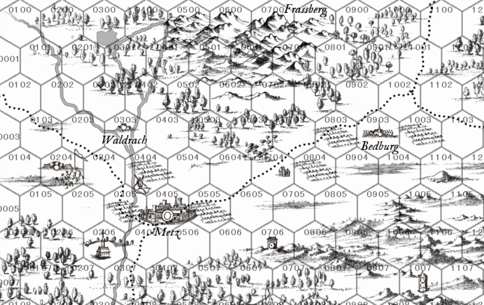
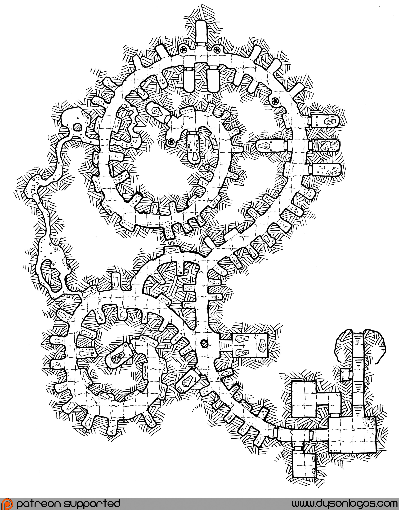
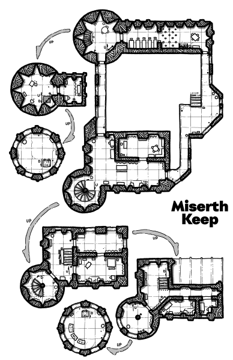
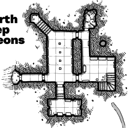
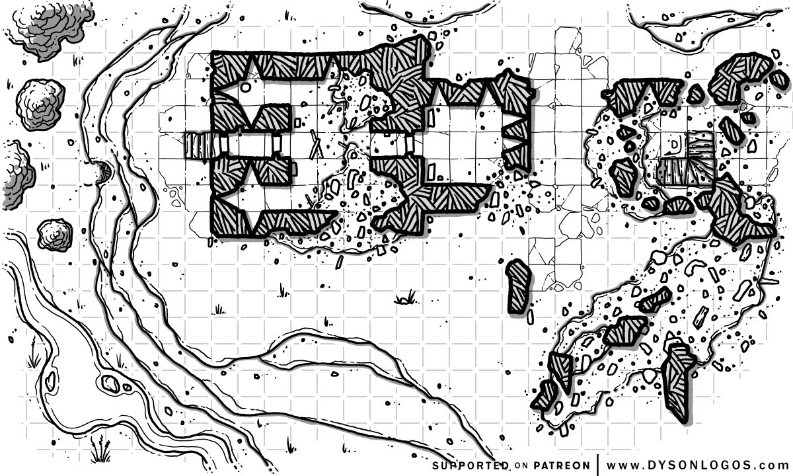
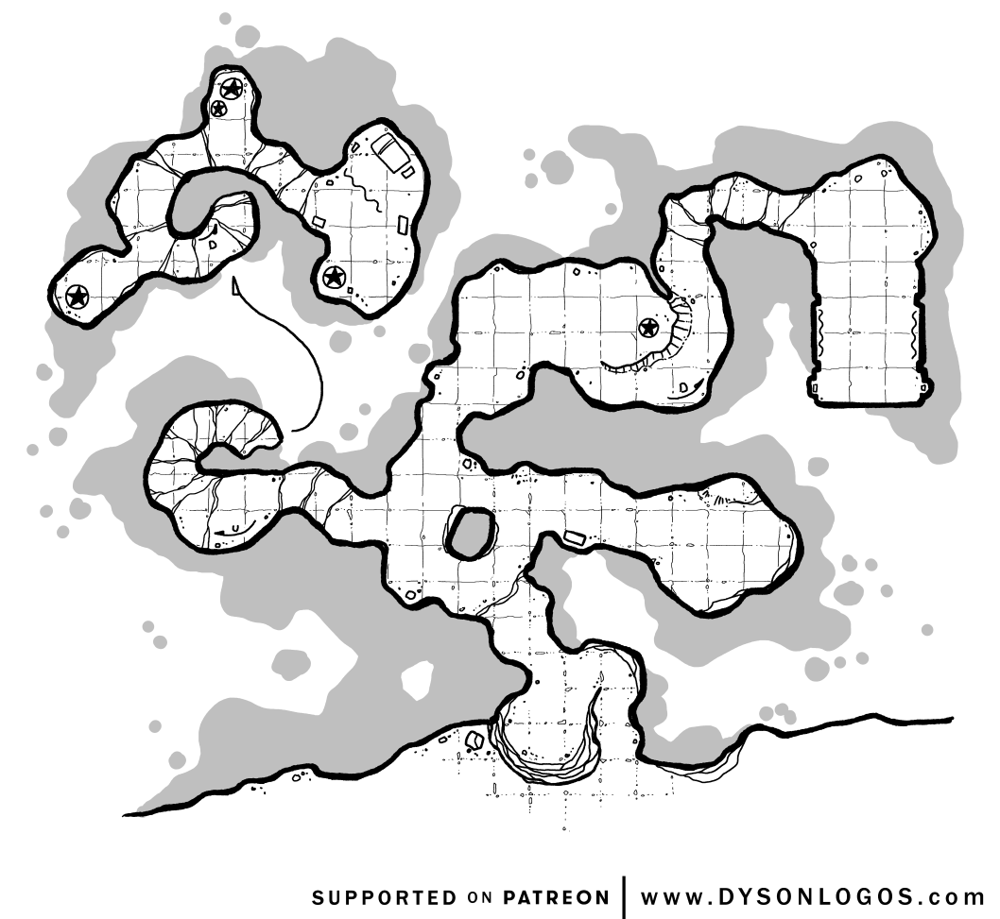

Chapter 2 The Region of Bergkessel

2.1 Hexes
- Obvious features are discovered when entering a hex.
- Hidden features are discovered in a 1:6 chance when entering a hex. If a party spends 1 day searching a hex, they have a 3:6 chance of finding hidden features. Rangers, Barbarians, and Elves (or other characters with appropriate knowledge) have a 4:6 chance.
| HEX | Description | Encounter Table |
|---|---|---|
| Hex 0100 | Rolling hills and a river. Two vagrants, Moritz and Alfons Kerbach fish in the river. Sporting overly bushy mustaches, full of breadcrumbs and ale foam from their early breakfast. Slur their words and constantly talk over each other. They have stashed away a keg of golden ale in the river, stolen from the brewery in Waldrach. They sell their day’s catch for 2sp per fish. Can provide a rumor about the region or be retained as (unreliable) hirelings. | Encounter Table A |
| Hex 0101 | Rolling hills and a river. Outskirts of the Frasswald. | Encounter Table A |
| Hex 0102 | Trade Road Weinweg and farm fields. | Encounter Table A |
| Hex 0103 | Trade Road Weinweg and farm fields. | Encounter Table A |
| Hex 0104 | Farm fields. | Encounter Table A |
| Hex 0105 | Farm fields. | Encounter Table A |
| Hex 0106 | Forest. | Encounter Table A |
| Hex 0107 | Forest and Owlbear lair. | Encounter Table B |
| Hex 0200 | Frasswald. Hag hideout of Esmeralda Fettnagel. | Encounter Table B |
| Hex 0201 | Frasswald | Encounter Table A |
| Hex 0202 | Frasswald | Encounter Table A |
| Hex 0203 | Farm fields, river, trade road Weinweg | Encounter Table A |
| Hex 0204 | Camp of the Witch Hunters. Wilhelm von Hagen, accompanied by 2 clerics (Level 2, chainmail, shield, mace), 20 Fighters (Level 1, chainmail, spears, longswords, shields, bows, horses), 25 civilian faithful acting as porters. Made camp here and erected simple defenses. Wilhelm is a staunch Catholic and looking for heretics, magic-users, witches, etc. He has heard rumors of the Werewolf killings in Bedburg and undead rising in Metz’ graveyard. The city of Metz has barred him from entering. | - |
| Hex 0205 | Farm fields. | Encounter Table A |
| Hex 0206 | Forest | Encounter Table B |
| Hex 0207 | Forest | Encounter Table B |
| Hex 0300 | Frasswald and Lechsee. Lake has crystal clear water. Sunken smuggler’s boat at the bottom of the lake (can be seen from above). Boat contains a sealed barrel with jewelry worth 3,000 gp. Giant Bass prowls the bottom of the lake. Fisher’s hut on the shore, abandoned. Fisher Waldemar took his own life 12 years ago. His Ghost haunts the hut. The hut contains fishing rods, various tools, Ring of Water Walking. | Encounter Table B |
| Hex 0301 | Frasswald. | Encounter Table B |
| Hex 0302 | Frasswald. | Encounter Table B |
| Hex 0303 | Waldrach. See Section 5 | - |
| Hex 0304 | Trade road Weinweg and farm fields. | Encounter Table A |
| Hex 0305 | Trade road Weinweg and farm fields. | Encounter Table A |
| Hex 0306 | The Graveyard. See below for details. | - |
| Hex 0307 | Trade road Weinweg, river, and light forest. | Encounter Table A |
| Hex 0400 | Frasswald. | Encounter Table B |
| Hex 0401 | Frasswald. Forest shrine | Encounter Table B |
| Hex 0402 | Frasswald. Secret tunnel exit from the Waldrach Brewery (Very Hidden, needs a double success on the 1:6 chance to find randomly). | Encounter Table B |
| Hex 0403 | Meadows. | Encounter Table A |
| Hex 0404 | Farm field, river and the Old Mill. Miller Theodor has had trouble with ruffians from Waldrach. Waldrach clan purchased flour from him and has not paid yet. The mill has some hidden treasure under a heavy flagstone. 900 gp and the skeleton of Erwin Merbeck, the former apprentice of Miller Theodor. Theodor strangled him in a fit of rage and told Erwin’s family in Waldrach that he ran away. The Waldrach clan is damming the river and threatening the survival of the mill. | Encounter Table A |
| Hex 0405 | Metz. See Section 3. | - |
| Hex 0406 | Trade road Weinweg and farm fields. | Encounter Table A |
| Hex 0407 | Forest | Encounter Table B |
| Hex 0500 | Frassberg Mountains. | Encounter Table B |
| Hex 0501 | Frassberg Mountains. Rotbart Brother’s Cave (Hidden). | Encounter Table B |
| Hex 0502 | Frasswald. | Encounter Table B |
| Hex 0503 | Frasswald. A loud grunt heard from afar. Towering elk caught in bear trap. A group of three hunters is converging. The antlers would fetch a pretty penny in a larger town (up to 800 gp). If the PCs let the elk die, roll a secondary Encounter die whenever the regular Encounter die is rolled. On a 1, a pack of wolves appears. | Encounter Table B |
| Hex 0504 | Farm fields. | Encounter Table A |
| Hex 0505 | Farm fields and trade road Gutsherrnstrasse | Encounter Table A |
| Hex 0506 | Farm fields. | Encounter Table A |
| Hex 0507 | Forest and logging camp. | Encounter Table B |
| Hex 0600 | Christman’s Lair (Hidden). See Section 7 | - |
| Hex 0601 | Frassberg Mountains and nest of Harpies. | Encounter Table B |
| Hex 0602 | Frassberg Mountains and bandit’s lair. | Encounter Table B |
| Hex 0603 | Frasswald. | Encounter Table B |
| Hex 0604 | Farm fields. | Encounter Table B |
| Hex 0605 | Farm fields and trade road Gutsherrnstrasse. | Encounter Table A |
| Hex 0606 | Farm fields. | Encounter Table A |
| Hex 0607 | Forest. A small pond with blooming flowers, drifting lazily on the surface. The smell of sweet pollen fills the air. A small water kobold hides in the water. She likes human teeth and will trade one tooth for expertly carved jade rings (each worth 400gp) | Encounter Table B |
| Hex 0700 | Frassberg Peak. See Section 8 | Encounter Table B |
| Hex 0701 | Frassberg Mountains. | Encounter Table B |
| Hex 0702 | Frassberg Mountains. | Encounter Table B |
| Hex 0703 | Frasswald and Hunter’s Lodge (Hidden) used by Bandits. Sorry Sister’s Outpost. | Encounter Table B |
| Hex 0704 | Trade road Gutshernnstrasse and Roadhouse. | Encounter Table A |
| Hex 0705 | Site of the Battle of Erichfeld. Nothing grows here, flies buzz. | Encounter Table A |
| Hex 0706 | Troll Hills and Goetz von Berlichingen’s Keep (The Rabenburg). | Encounter Table C |
| Hex 0707 | Forest. Tomb of St. Jakobus (Hidden). | Encounter Table B |
| Hex 0800 | Frassberg Mountains. | Encounter Table B |
| Hex 0801 | Frasswald and Halfling Bandit’s Burrow (Hidden). Torfstecher Burrow. | Encounter Table B |
| Hex 0802 | Frasswald. | Encounter Table B |
| Hex 0803 | Farm fields and trade road Gutsherrnstrasse. | Encounter Table A |
| Hex 0804 | Farm fields. | Encounter Table A |
| Hex 0805 | Meadows. The smell of honey and a loud buzzing sound. Dangerous bee hive (use Killer Bee stats), tended by a beekeeper. Bees are aggressive, beekeeper will protect bees, will trade honey (has a positive effect), bees tend to a nearby vineyard that makes the wine special. | Encounter Table A |
| Hex 0806 | Troll Hills. | Encounter Table C |
| Hex 0807 | Forests. | Encounter Table B |
| Hex 0900 | Frasswald. | Encounter Table B |
| Hex 0901 | Frasswald. | Encounter Table B |
| Hex 0902 | Meadows. | Encounter Table A |
| Hex 0903 | Bedburg. See Section 4 | |
| Hex 0904 | Farm fields and Werewolf murder site: a family of six, torn to pieces, crows feasting. | Encounter Table A |
| Hex 0905 | Troll Hills and Greencloak Pike’s Hideout (Hidden). | Encounter Table C |
| Hex 0906 | Troll Hills. | Encounter Table C |
| Hex 0907 | Troll Hills. | Encounter Table C |
| Hex 1000 | Frasswald. | Encounter Table B |
| Hex 1001 | Trade road Gutsherrnstrasse. | Encounter Table A |
| Hex 1002 | Trade road Gutsherrnstrasse. Totenbaum. A dozen corpses hanging on ropes from the branches of a large willow tree. In the center, a hanging cage with treasure in it (jewelry worth 2,000 gp and a +1 rapier). Corpses attack anyone who steals the treasure. Can be appeased? Tree is a monster as well, has vines that can strangle and string up PCs, turning them into new undead. | Encounter Table A |
| Hex 1003 | Peter Stumpps’ Farm. | Encounter Table A |
| Hex 1004 | Farm fields. | Encounter Table A |
| Hex 1005 | Troll Hills. | Encounter Table C |
| Hex 1006 | Troll Hills. | Encounter Table C |
| Hex 1007 | Peter Niers’ Tower. See Section 6 | Encounter Table C |
| Hex 1100 | Trade road Gutsherrnstrasse. | Encounter Table A |
| Hex 1101 | Forest and buried bandit’s treasure cache. | Encounter Table B |
| Hex 1102 | Trade road Kantonweg. By the side of the road, a skeleton without legs, wearing the rags of a Landsknecht. A shiny golden glint can be seen from a distance. The skeleton sits on a pile of gold coins (567gp). When approached, the skeleton begins to move its head and arms, welcoming anyone who dares to approach. The skeleton is sad and lonely, will trade gold coins for jokes. | Encounter Table A |
| Hex 1103 | Trade road Kantonweg. | Encounter Table A |
| Hex 1104 | Troll Hills. | Encounter Table C |
| Hex 1105 | Troll Hills and Monster lair. Ogre cave. The stench of burnt flesh. 1D4+2 ogres roasting halflings on a spit. Two halfling are bound and alive. Ogres are in a feud with the local trolls. Ogres also lack spices for cooking. | Encounter Table C |
| Hex 1106 | Troll Hills. | Encounter Table C |
| Hex 1107 | Troll Hills. | Encounter Table C |
2.2 Wilderness Encounter Tables
| 1D100 | Encounter |
|---|---|
| 1–3 | Bandits. The Brothers Rotbart. Both of them. |
| 4–6 | Bandits. The Sorry Sisters. 1d3+1. Expert bowhunters (Brigands). |
| 7–9 | Bandits. 1d4+3 members of the Torfstecher Gang. Halflingsarmed with slings, shortbows, daggers, and shortswords. Led by one named member of the gang. |
| 10–12 | Bandits. The Greencloak Pikes. 6+1d6 Brigands armed with spears and shortbows. |
| 13–15 | Bandits. 1D8+3 Waldrach clan members (Berserkers). Armed with clubs, slings, knives, and morningstars. |
| 16–19 | A pack of 1d6+2 wolves and 1 direwolf. They are more aggressive than usual due to the Werewolf in the region. |
| 20–23 | 1D4 deer. |
| 24–25 | A badger. |
| 26–30 | A pack of 1D6+3 rabid stray dogs. If bitten, save vs disease or contract Tollwut. After two days, the infected have a 10% chance of falling into a biting rage in every social encounter. Chance increases by 10 percentage points every day. Infected dies on day ten. |
| 31–50 | Soldier patrol. Use Veteran stats. A group of 1D4+3 militia men from Metz guarding the road. Morale roll: negative disposition means the soldiers will attempt to extract a tax (10 gp per person). |
| 51–55 | Witch hunters. On patrol from Hex Hex 0204. Suspicious of odd travelers, expect absolute deference. They have a writ from Wilhelm von Hagen charging them to hunt down heretics (legal experts can discern this is a extreme interpretation of the document). 1 cleric (level 3), 5 Fighting Men (Level 1). If hurt, will retreat to report to Wilhelm von Hagen. |
| 56–60 | A peddler and his wagon. Long beard, colorful hat, whistling a tune. Three cats roam the inside of the wooden wagon. Happy to trade in unreliable rumors, trade goods. 25% chance he has a minor magic item for sale. |
| 61–65 | A wandering carpenter’s apprentice on the Walz. Coming or going to Metz. Kindness to apprentices on the Walz is rewarded with good fortune (1 re-roll one failed roll). |
| 66-75 | Cloth or wine merchant from Metz. Large cart (full of trade goods) with 2 Guards. Strongbox with 400 gp. |
| 76–80 | Ale wagon from Waldrach. 4 burly coachmen with large clubs. Associated with the Waldrach clan. |
| 81–84 | A group of 1d6+2 Catholic Pilgrims on their way to the Cathedral in Cologne. Pockets full of gold (3D20). |
| 85–88 | A group of 2d6+4 Protestant refugees from France. Destitute. |
| 89–93 | A wandering scribe and scholar from the University of Bologna. 25% he has a random 1st-level MU scroll and a 10% chance a 2nd-level spell scroll for sale. |
| 94–96 | A wandering acting troupe. Puts on terrible plays. A good source of rumors and information. |
| 97 | A traveling puppeteer. Pawel Wójcik (57 years-old, male witch). Level 4 MU (Spell Book: Charm Person, Vetriloquism, Sleep, Detect Magic, Read Magic, ESP, Phantasmal Force, Mirror Image). Owns 3 magical puppets that can animate (a little jester, knight, and princess). Needs souls to animate new puppets, will prey on the helpless. Has a separate book that details a ritual to create soul-bound constructs. Carries a Wand of Fear and 3 dark red gems, each worth 650 gp. |
| 98 | A reinforced carriage from the Handelshaus von Bodeck. Transporting coin: 1D6X1,000 gp, 1D8X 1,000 sp. 8 well-trained guards (Veteran), armed with crossbows, chain shirts, longswords. |
| 99 | The devil traveling in the disguise of a halfling troubadour. Long black hair, cap with a red feather, a blue glass eye, seems to have no joints and can bend arms and legs at will. Names himself Red Balthasar. Can share rumors, secret information, or his magical flute Kreischer in exchange for the promise of a favor. Favors: Kidnap the daughter of a silversmith in Metz and bring her to Balthazar; Destroy the remains of Sankt Jakobus; Reveal Peter Stumpp as a werewolf to Wilhelm von Hagen. Frame the rest of his family. |
| 100 | Goetz von Berlichingen. Famous knight and mercenary. Known for having lost his right hand and wearing an iron fist replacement. Booming laughter. Accompanied by a retinue of 8 Fighting-men, 5 porters, 1 wagon full of locked treasure chests (contain 15,000 gp). On his way home from a recent mercenary venture. He is in a Fehde with the city of Metz. Is open to using the PCs to attack and ransack the city. |
| 1D100 | Encounter |
|---|---|
| 1–10 | Bandits. The Brothers Rotbart. Both of them. |
| 11–20 | Bandits. The Sorry Sisters. 1d3+1. Expert bowhunters (Brigands). |
| 21–30 | Bandits. 1d4+3 members of the Torfstecher Gang. Halflings armed with slings, shortbows, daggers, and shortswords. Led by one named member of the gang. |
| 31–40 | Bandits. The Greencloak Pikes. 6+1d6 (stats equal to Bugbears armed with spears and shortbows). |
| 41–50 | Bandits. 1D8+3 Waldrach clan members (Berserkers). Armed with clubs, slings, knives, and morningstars. |
| 51–60 | A pack of 1d6+2 wolves and 1 direwolf. They are more aggressive than usual due to the Werewolf in the region. |
| 61–70 | 1 bear. |
| 71–80 | 2d6 boars. |
| 81–90 | 1D4 Hunters looking for quarry. |
| 91–99 | Ale delivery for Christman. 4 porters are carrying kegs of ale from Waldrach to one of the entrances to Christman’s lair in Hex 0600. Accompanied by 3 Berserkers and Uncle Otto of the Waldrach Clan. |
| 100 | Location of a witches hut (changes location). Algrexia the Green. Might trade spells and potions for services. Dislikes the witch hunters. Knows about Lise Mueller, but won’t volunteer information. Has general knowledge of Peter Niers and Christman. Might be mistaken for the one that cursed Peter Stumpp. Karla Boxberg is currently staying with her. Karla is 4 months pregnant. The father is married and Karla was afraid of the consequences if people found out. She ran away and sought the help of Algrexia. Algrexia has been helping women in need for decades, assisting their flight to nearby towns and into new lives. She doesn’t only do it out of the goodness of her heart–everyone pays a price. |
| 1D100 | Encounter |
|---|---|
| 1–15 | 1D6+4 Zombies. Undead Landsknechte. |
| 16–25 | 2D12 Skeletons |
| 26–30 | 1D6 Ghouls |
| 31–35 | 1 Ghast and 1D6+2 Ghouls |
| 36–37 | 1D6 Wights. |
| 38–39 | 1D4 Wraiths. |
| 40–41 | 1 Ghost |
| 42–43 | 1 Revenant |
| 44–45 | 1D3 Spawn of the Worm |
| 46–60 | 1D8 Trolls |
| 61–75 | 1d6 Ogres. Feuding with the trolls. Afraid of the undead. |
| 76–85 | Three Brigands on a cart with dead bodies (hidden), coming from the Graveyeard. Transporting dead bodies to Niers’ Tower to assist his experiments. |
| 86–95 | 1D6+4 Greencloak Pikes (Bugbears stats) on their way to parlay with Peter Niers. |
| 96–100 | Peter Niers. |
| 2D6 | Weather Event |
|---|---|
| 2 | Thunderstorm |
| 3 | Heavy rain |
| 4–5 | Rain |
| 6–8 | Cloudy |
| 9–11 | Sunny |
| 12 | Hot |
| 1D20 | Rumors |
|---|---|
| 1 | Rumor of wolf attacks |
| 2 | Rumor of witches |
| 3–7 | Dark deeds of Christman and his hoard |
| 8 | Rumor of vanished (pregnant) women |
| 9–10 | Rumor about the Waldrach clan |
| 11–13 | Rumor about another bandit group |
| 14 | Rumor about the good ale in Waldrach |
| 15–16 | Rumor about the Witch Hunters |
| 17 | Rumor about the Troll hills |
| 18 | Rumor of St. Jakobus |
| 19 | Rumor about Frassberg peak, how it is unusually cold up there. |
2.3 Locations
2.3.1 The Graveyard and Crypts, Hex 0306

The Graveyard. An old section of tombs, full of treasure and undead. The graveyard has problems with opened tombs and missing bodies, main grave digger (Albrecht Stiefel) is incompetent at dealing with this (old, drunk as a skunk, looks like an old leather shoe). He believes the dead are walking at night. Despite the Bürgermeister having commanded him to keep an eye out, he locks himself into his shed and gets drunk every night. The Gravenstein family offers a reward (2,500 gp) for returning a lost family heirloom (found in Peter Niers tower). The assistant grave digger (Hensel Weggeman, 18 years old, red hair, scar across the cheek) has a deal with Peter Niers to give him access to tombs and bodies.
Above ground: 6 graves that have been dug up in the last month:
- 4 graves that have been dug up with tools. People from all walks of life, some recently deceased, some very old bones.
- 2 graves dug up by hand/claw. All very recently deceased. The ghouls dig temporary tunnels to the surface, and collapse them after securing a meal. PCs can find evidence of three spots with very loose earth.
Crypts below ground: Albrecht Stiefel recently saw two broken grave niches in the crypts. Access to barred via an iron grate. Only he and certain families in town have keys (Gravenstein, von Eberhart, Reims, Hutmeister)
If Hensel Weggeman is questioned, he will be evasive but will buckle under pressure. He will confess a group of men have paid him to give access to the graveyard and crypts. He hands him the key and hides in the gravediggers hut when Albrecht is sleeping off his drunken stupor. They leave a chalk mark in town when they plan to come. They have a wagon, typically three of them show up.
The Crypts A group of undead have begun to roam the crypts and use it as their lair. Niers’ men wear special amulets that identify them as allies. Monsters in the crypt: 8 Ghouls and 1 Ghast (nest in the secret ghoul tunnel); 2 Carcass Crawlers (one has a hidden hole on the ceiling in the first room with a big column, the other lairs at the end of the Northern spiral).
Random Encounters, check every turn
| 1D6 | Encounter |
|---|---|
| 1-2 | 3 Ghouls |
| 3-5 | 1 Ghast and 2 Ghouls |
| 6 | 1 Carcass Crawler |
Any monsters that are part of random encounters should be struck from the overall roster. A loud fight attracts any remaining ghouls.
Crypt Entrance: Dusty floor, but visible tracks of multiple people moving through here, scuff marks on the ground. Christian wall carvings.
Sideroom at the Entrance: Locked, tools and supplies for grave digging and the maintenance of grave niches.
Second side room to the South: Locked, contains blessed candles (when lit, undead need to pass a Saving throw vs Spells to approach, but fast movement is impossible), 8 vials of holy water.
Random small niche or coffin: roll 1D10: 1 broken open and empty, 2-5 sealed no valuables, 6-8 sealed filled with 2D20 gp worth of treasure, 9-10 sealed filled with 3D20+20 worth of treasure.
Random larger niche: roll 1D10: 1-2 broken open and empty, 3-4 sealed no valuables, 5-8 sealed filled with 200 gp + 3D20 gp worth of treasure, 9-10 sealed filled with 400 gp + 4D20 gp worth of treasure.
Ghoul Tunnel: Hidden, found like a secret door.
Gravenstein family niche: End of Western spiral. Broken open, corpse stolen.
Grave niche with Secret door: hidden compartment filled with a scroll case (1 level 1 cleric spells, 1 level 2 cleric spells, 1 level 3 cleric spell), second scroll case (cursed scroll, but looks like arcane script), protected by an old poison needle trap, triggered when the secret level is pulled (3:6 chance of working, Save vs Poison, take 2d6 damage each turn for 1d6 turns).
Most Northern grave: grave of Ritter Ulrich von Eberhart, companion and protector of St. Jakobus. His grave is undisturbed. Two angel statues flank the grave and one tablet with an inscription: “Here lies Sir Ulrich von Eberhart, protector of the weak, friend of the poor, and loyal defender of St. Jakobus.” Several stone reliefs depict the story of Ulrich von Eberhard: 1st relief shows him traveling next to the Saint. 2nd relief depicts the Battle of Erichfeld, where the Saint was attacked by the Fratzenteufel and died. Sir Ulrich defended the body of the Saint from being taken by the devil. Inside the sealed grave: A 3rd relief: Sir Urlich carries the dead Saint to a secret resting place (A cave entrance in a forest, with a castle in the hills in the background). The knight is buried with his +1 Plate, +1 Shield, and +1 Longsword / +3 vs Undead. The statues are of angels, but they are actually Stone Golems. They will animate when the grave is disturbed.
2.3.3 Die Rabenburg, Hex 0706
Goetz von Berlichingen and his men quarter here. 40 men-at-arms (statistics of a HD1 Veteran, chainmail, shield, spears, swords, crossbows), 4 officers (2HD Veterans, chainmail, shield and longsword), 2 clerics (Level-2, chainmail, mace, shield).
If under attack, his men will pepper any approaching party with crossbow bolts. Double Gate will be barred. They have supplies for at least a month of siege. Walls are 10ft high. There are always guards posted on the walls, towers, and the gate. From the towers, burning tar can be lobbed.
Groundfloor: Stable with 8 horses (2 are for Goetz, the rest for his officers). Kitchen dining room, watch towers.
1st floor: More rooms for his men and common areas. Walkway for the wall.
Northern Tower: Guards on dury.
Southern Tower: Goetz’ personal quarters are in the South Tower, top floor. Other personal rooms are for officers or clerics.
Basement: Vault (South) behind an iron door (Goetz carries the key), contains 25,000 gp, 8,000 gp in jewels. Door to a separate exit. Larder: full of rations for his men. Armory: 2,000 crossbow bolts, 10 crossbows, 50 Spears, 20 Longswords, 20 Shields, 10 suits of chainmail, 10 suits of leather armor.
Goetz von Berlichingen: (Fighter-8) AC 17 (Plate and Shield), HD 8 (51), Attacks: 1x Zweihänder 2d6+3, THAC0: 14[+5/+7 with Zweihänder], Movement: 120’ (40’), ST: D8 W9 P10 B10 S12, Morale 10, Alignment CG, XP 300. Equipment: +1 Zweihänder, Iron Hand (+1 to attack and damage, allows the wielding of two-handed weapons in one hand), Special: 1 Potion of Heroism.



2.3.4 Bandit Camps
The Torfstecher Hideout, Hex 0801 
The Halflings are camping in the Western ruins. They buried their loot in the Eastern ruins: 983 gp, 340 sp.
The Rotbart Cave, Hex 0501 
The Brothers Rotbart have a cave in the Frassberg Mountains. They have a small treasure hoard: 1,200 gp, 2 gems worth 100 gp each, 1 potion of healing, 1 potion of Speed, 1 potion of water breathing, 1 scroll of Protection from Good and Evil. They have lured a Cockatrice into the Eastern Cave and keeping it locked in there, trying to train it (unsuccessfully). They sleep in the Western parts of the cave.
The Sisters’ Camp, Hex 0703 An old ranger outpost. A simple tree house. A ladder leads up (30ft). A square base with a small 20x20 shelter.
The Sisters have rations for 3 weeks and a small armory. They don’t have much treasure (4 healing potions, 1 potion cure disease, 67 gp), because they share their loot with the poor. At least 2 sisters remain at their outpost.
The Greencloak Pikes, Hex 0905

There is a total of 31 Greencloak Pikes (statistics of a Bugbear, armed with spear, sword, shortbow, wearing leather armor), excluding Jakob and Johann Straub. 3:6 chance Jakob is in the lair. At least 12 Greencloaks are in the hideout at all times, resting and recuperating. The others are out scouting/raiding.
Jakob has a personal space in the Northern cave. Proper rooms are kept for keeping supplies dry.
Loot: rations for 2 weeks for 30 people, 2,500 gp, gems worth 2,300 gp, cloth worth 7,500 gp (hard to transport).